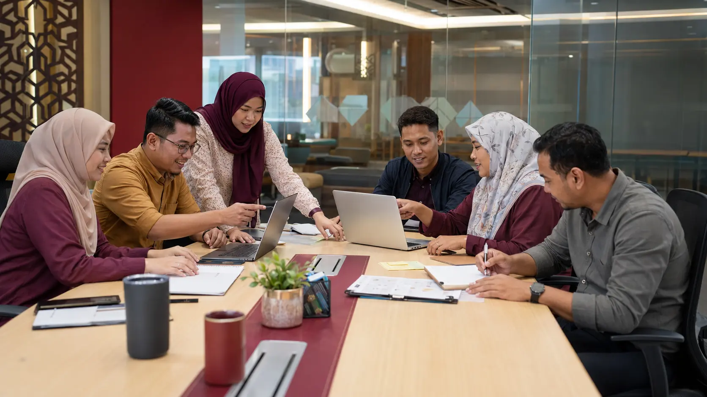
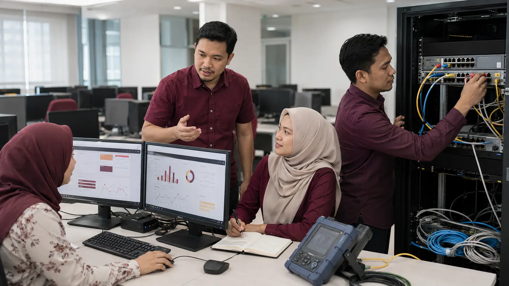

Sesi 1
Sesi 1
AI, Automasi atau Manusia?
5 langkah · tugasan, risiko, kawalan dan keputusan.
Buka latihan →PUSAT LATIHAN PRAKTIKAL · STAF FC
Pilih latihan mengikut sesi. Setiap halaman mempunyai imej, arahan, hasil serahan, prompt langkah demi langkah dan fungsi salin.

CAPAIAN PANTAS
Mulakan dengan latihan yang ditetapkan dalam sesi. Latihan lain boleh diteruskan selepas bengkel.
Sesi 1
5 langkah · tugasan, risiko, kawalan dan keputusan.
Buka latihan →6 langkah · bina, uji, audit dan muktamadkan prompt.
Buka latihan →
Sesi 36 langkah · data, KPI, SLA, dashboard dan laporan.
Buka latihan → Sesi 4
Sesi 4
6 langkah · keputusan, tracker, susulan dan agenda.
Buka latihan → Sesi 5
Sesi 5
6 langkah · dakwaan, bukti, risiko dan keputusan.
Buka latihan →